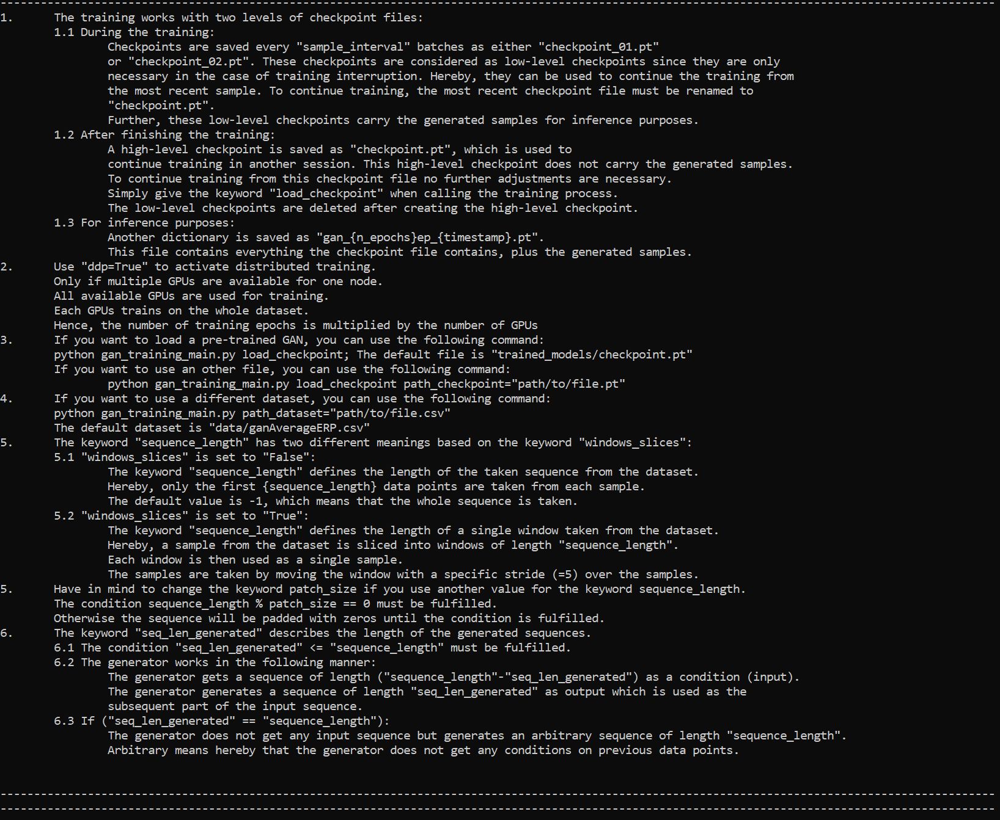
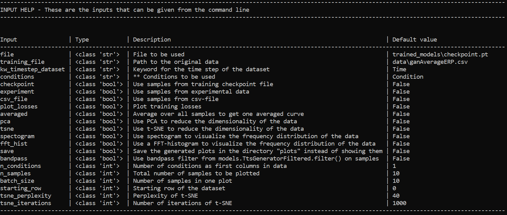
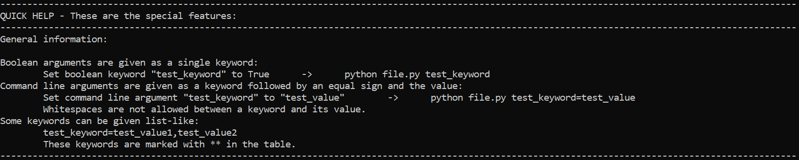
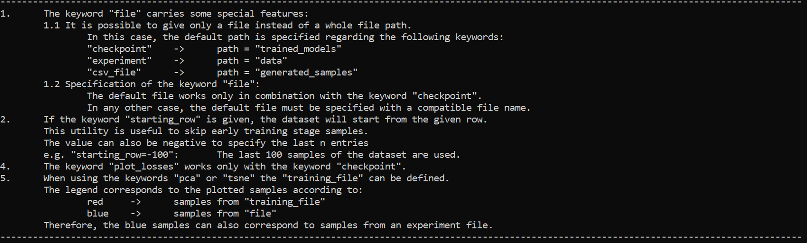
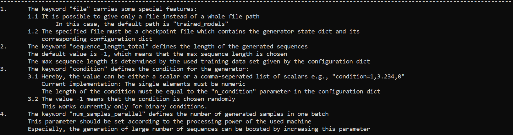

GAN Package Main Functions
GAN Package Details
Functions
There are three main functions from the EEG-GAN package:
train_gan() - This trains a GAN
visualize_gan() - This visualizes components of a trained GAN, such as the training losses
generate_samples() - This generates synthetic samples using the trained GAN
Arguments
Each function can take a single argument argv, which should be a dictionary:
argv = dict(
path_dataset=data\my_data.csv,
n_epochs = 100
)
train_gan(argv)
Help
You can use the help argument to see a list of possible arguments with a brief description:
train_gan(dict(help = True))
visualize_gan(dict(help = True))
generate_samples(dict(help = True))
GAN Training Help
train_gan(dict(Help = True))


Visualize Help
visualize_gan(dict(Help = True))


Generate Samples Help
generate_samples(dict(Help = True))

